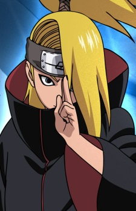

DEIDARA

- Deidara was an S-rank missing-ninja from Iwagakure.
During his time in the village, he was a member of the Explosion Corps.
After defecting from the village, he was forced into Akatsuki and was its youngest member.
There, Deidara was partnered with Sasori until the latter's death, and later with Tobi before his own death.
Deidara was a very powerful S-rank missing-ninja whose abilities earned him recognition within Akatsuki.
Even the organisation's leader, Pain, praised Deidara's abilities, openly admitting that he was something
unique, and that his loss was a major blow to the group. Deidara was able to single-handedly defeat Gaara ,
and Isobu, despite fighting the both of them in their home territories.
He also fought on equal grounds with Sasuke Uchiha, an Uchiha clan prodigy, despite his techniques being
at an elemental disadvantage against those of Sasuke.
Know more
|